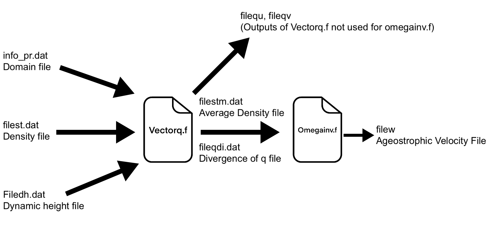

Creating Density and Dynamic Height Files
Summary: This code was used to create density and dynamic height files for a set of dates from a NetCDF File.Steps:
- Imported 5 different libraries: NetCDF, matplotlib.pyplot, numpy, datetime, seawater
- Established (5) data sets using NetCDF commands
- Assigned variables to Salinity, Temperature, Depth, and Time
- Made a for loop to go through and create density and dynamic height files for each date from Jan 6 1993 - Dec 26 2018, using seawater library to compute density
Fortran Files and Shell Scripts
Fortran Files
Summary: We used two fortran code files to change the Density and Dynamic Height Files into Vertical Velocity Files. Fortran is a compiled imperative programming language that is especially suited to numeric computation and scientific computing. Originally developed by IBM in the 1950s for scientific and engineering applications.
For the first fortran file (Vectorq.f) we had 3 inputs: the domain file (which contained information important for calculation), which was consistent for all dates, as well as the density and dynamic height file for the coresponding date. That outputed a few files, the two most important being the average density file and the divergence of q file which were inputed to the second fortran file (omegainv.f) which outputed the Vertical Velocity file.
Shell Scripts
Summary: The shell script was used to run repetitive tasks using terminal commands that would take hours to complete if we were to manually do it. When running the fortran files, there was only one date being used for data, so we had to change which date was being used and run the fortran code again. This is where Shell Scripts come in. Shell scripts are programs that execute terminal commands as well as other commands such as for loops.Steps:
- Create the exe files that will run the fortran code
- Read through each date in a specified list and for each date:
- Run a python file that creates an exec file for the specified date
- Run the created exec files
Creating Hovmoller Diagrams
Summary: This code takes the vertical velocity data and plots it in a Hovmoller Diagram. A Hovmoller diagram is a way of plotting multiple splices of data to highlight the behavior of the ocean patterns. The axes of Hovmoller diagrams depict changes over time of qualities such as temperature, density, depth, and height. We picked a range of longitudes and displayed the frequencies of eddies over 25 years.Steps:
- Import NetCDF4, Matplotlib.pyplot, matplotlib.cm, matplolib.colors.ListedColormap, matplolib.colors.LinearSegmentedColormap, numpy, and datetime
- Get data from NetCDF file (the vertical velocity, latitude, longitude, and time)
- Get a slice of the data with a single latitude and depth and all of the time and longitude
- Plot the slice of data
Libraries
- NetCDF4: This was used to read in our data.
- Matplotlib (pyplot, cm, colors): This was used to plot our data.
- Numpy: This helped us manipulate our data.
- Datetime: This was used to calculate dates.
- Seawater: This was used to calculate density.